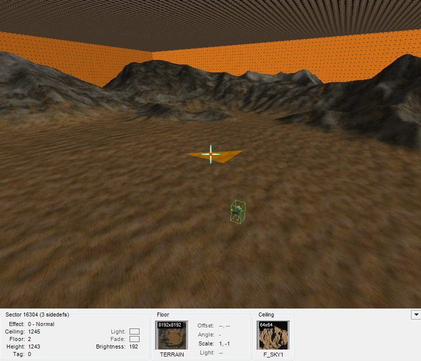
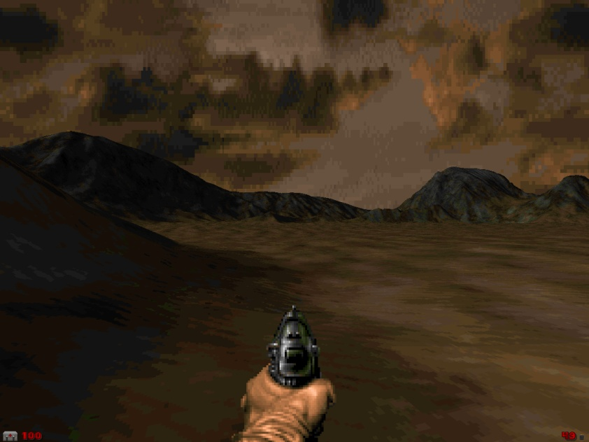

This mode allows you to create sectors from a Wavefront .obj model.
Menu path: File -> Import -> Wavefront .obj as Terrain.
Action category: Tools.
Default key: none.
Usage:
Create a terrain model in your favorite 3d modeling app (Blender, Earth Sculptor or any other, which can save a model to Wavefront .obj format)
Use File -> Import -> Wavefront .obj as Terrain action to import it as sectors. Each polygon in your model will be transformed into sector.

